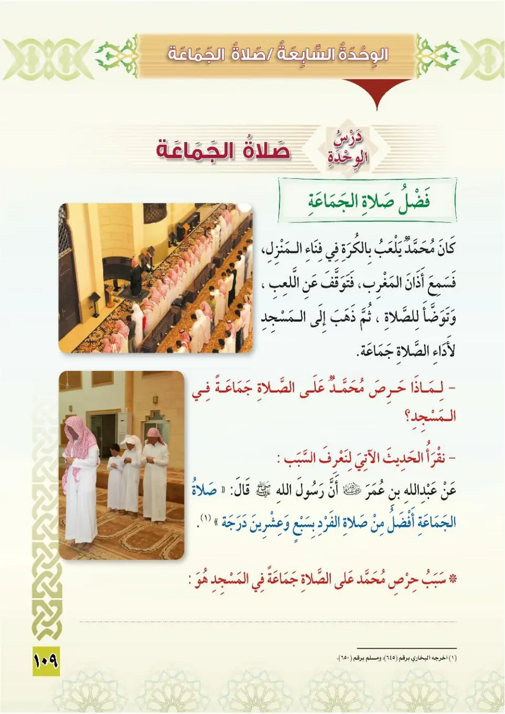

Stage 3·المرحلة الثالثة💧 Unit 7
صَلَاةُ الْجَمَاعَةِ Congregational Prayer
From the Textbookp. 110

كَانَ مُحَمَّدٌ يَلْعَبُ بِالْكُرَةِ فِي فِنَاءِ الْمَنْزِلِ، فَسَمِعَ أَذَانَ الْمَغْرِبِ، فَتَوَقَّفَ عَنِ اللَّعِبِ، وَقَالَ: أَذْهَبُ إِلَى الْمَسْجِدِ لِأَدَاءِ الصَّلَاةِ جَمَاعَةً. حَرْصُ مُحَمَّدٍ عَلَى الصَّلَاةِ فِي الْمَسْجِدِ لِلسَّبَبِ التَّالِي:
Kana Muhammadun yal'abu bil-kurati fi fana'i al-manzil, fasami'a adhana al-maghrib, fatawaqqafa 'ani al-la'bi wa qala: adhhabu ila al-masjid li-ada'i as-salah jama'ah.
Muhammad was playing ball in the courtyard of the house when he heard the adhan of Maghrib. He stopped playing and said: I am going to the mosque to pray in congregation.
Muhammad's eagerness to pray in the mosque was for the following reason:
முஹம்மது வீட்டு முற்றத்தில் பந்து விளையாடிக் கொண்டிருந்தான்; மஃரிப் அதான் கேட்டதும் விளையாட்டை நிறுத்தி, "பள்ளிக்குச் சென்று ஜமாஅத்தாக தொழப் போகிறேன்" என்றான்.
அவனது ஆர்வத்திற்கான காரணம்:
قَالَ رَسُولُ اللهِ ﷺ: «صَلَاةُ الْجَمَاعَةِ تَفْضُلُ صَلَاةَ الْفَذِّ بِسَبْعٍ وَعِشْرِينَ دَرَجَةً». أَخْرَجَهُ الْبُخَارِيُّ وَمُسْلِمٌ.
Qala rasulullah ﷺ: «Salatu al-jama'ati tafdulu salata al-fadh-dhi bisab'in wa 'ishrina darajah.» Akhrajahu al-Bukhari wa Muslim.
The Messenger of Allah ﷺ said: "The congregational prayer is twenty-seven degrees superior to the prayer offered alone." Narrated by al-Bukhari and Muslim.
நபி ﷺ கூறினார்கள்: "ஜமாஅத் தொழுகை, தனி தொழுகையை விட இருபத்தேழு பாகையால் சிறந்தது." (புகாரி, முஸ்லிம்)
أَتَى النَّبِيَّ ﷺ رَجُلٌ أَعْمَى، فَقَالَ: يَا رَسُولَ اللهِ، لَيْسَ لِي قَائِدٌ يَقُودُنِي إِلَى الْمَسْجِدِ، وَسَأَلَهُ أَنْ يُرَخِّصَ لَهُ فَيُصَلِّيَ فِي بَيْتِهِ، فَرَخَّصَ لَهُ، فَلَمَّا وَلَّى دَعَاهُ، فَقَالَ: «هَلْ تَسْمَعُ النِّدَاءَ بِالصَّلَاةِ؟» قَالَ: نَعَمْ، قَالَ: «فَأَجِبْ». أَخْرَجَهُ مُسْلِمٌ.
Ata an-nabiyya ﷺ rajulun a'ma fa-qala: ya rasulallah, laysa li qa'idun yaquduni ila al-masjid, wasa'alahu an yurrakhkhusa lahu fa-yusalliya fi baytihi, fa-rakhkhusa lahu, falamma walla da'ahu fa-qala: «Hal tasma'u an-nida'a bis-salah?» qala: na'am, qala: «Fa-a-jib.»
A blind man came to the Prophet ﷺ and said: O Messenger of Allah, I have no one to guide me to the mosque, and he asked him to grant him a concession to pray at home. The Prophet granted him a concession, then when the man left he called him back and said: "Do you hear the call to prayer?" He said: Yes. He said: "Then respond." Narrated by Muslim.
பார்வையற்ற ஒருவர் நபி ﷺ அவர்களிடம் வந்து, "தூதரே! என்னைப் பள்ளிக்கு அழைத்துச் செல்ல வழிகாட்டி இல்லை" என்று, வீட்டில் தொழ அனுமதி கேட்டார். நபி ﷺ அனுமதித்தார்கள்; அவர் திரும்பியபோது அழைத்து, "தொழுகை அழைப்பை (அதானை) நீ கேட்கிறாயா?" என்று கேட்டார்கள். "ஆம்" என்றார். "அப்படியானால் வந்து சேரு" என்றார்கள். (முஸ்லிம்)
أُضَمِّنُ الصَّلَوَاتِ الْخَمْسَ فِي الْمَسْجِدِ، وَالرِّجَالُ يُحَافِظُونَ عَلَى أَدَاءِ الصَّلَوَاتِ الْمَفْرُوضَةِ جَمَاعَةً فِي الْمَسْجِدِ؛ لِأَنَّ صَلَاةَ الْجَمَاعَةِ وَاجِبَةٌ عَلَى الرِّجَالِ فِي الْمَسْجِدِ.
Addu as-salawati al-khams fil-masjid, war-rijalu yuhafizhuna 'ala ada'i as-salawati al-mafrudah jama'atan fil-masjid; li'anna salata al-jama'ati wajibatun 'ala ar-rijal fil-masjid.
Perform the five prayers in the mosque, and men remain regular in performing the obligatory prayers in congregation in the mosque, because the congregational prayer is obligatory upon men in the mosque.
ஐந்து தொழுகைகளையும் பள்ளியில் ஜமாஅத்தாக செய்யுங்கள்; ஆண்கள் கடமைத் தொழுகைகளை ஜமாஅத்தாக பள்ளியில் செய்வதில் நிலையாக இருக்கிறார்கள்; ஏனெனில் பள்ளியில் ஜமாஅத் தொழுகை ஆண்களுக்குக் கடமை.